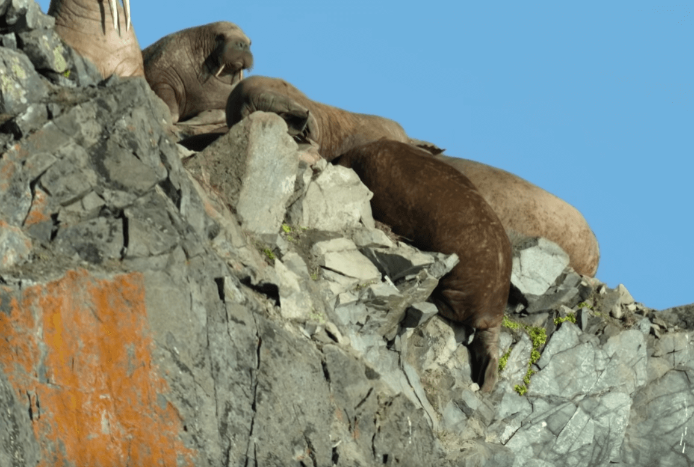
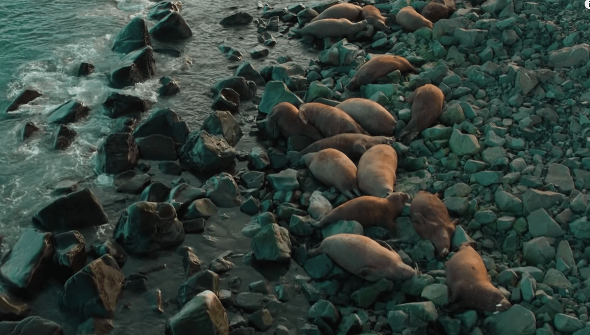

在20世纪50年代中期，由于受到不受限制的捕杀，海象中的太平洋海象亚种的数量一度下降到仅剩5万至10万头。如今，在北欧、北美的分布地，海象其实得到了不错的保护。除了因纽特人、尤皮克人等当地土著可进行少量传统的海象猎杀活动，其他猎杀海象、贩卖海象制品的行为都是违法的。
曾经惨遭人类无情捕杀的海象好不容易迎来了片刻安宁，目前却似乎面临着其他方面的威胁。近年来，由于气候变化的原因，海象栖息地的环境不断变化。
根据生物学家推测，著名的海象“芙蕾雅”应该来自北冰洋的挪威群岛——斯瓦尔巴群岛。该群岛位于挪威北部海岸和北极之间，约60%被冰川覆盖，拥有众多山脉和峡湾。当地居民约有3000人，而生活在此的海象大约有2000只。
2019年，流媒体视频网站Netflix发布了纪录片《我们的星球》，记录下了一个令人悲伤的画面——海象集体从悬崖坠落而亡。
 纪录片拍摄于目前地球上最大的海象聚集地——俄罗斯东北海岸。镜头下，十万头海象密密麻麻地聚集在海滩上。由于气候变化导致海冰减少，冰面退却到更为北边的地方，海象们不得不栖息在这片距离它们捕食区最近的海滩。
保护海象，保护极地生态，需要我们每个人的关注与行动！